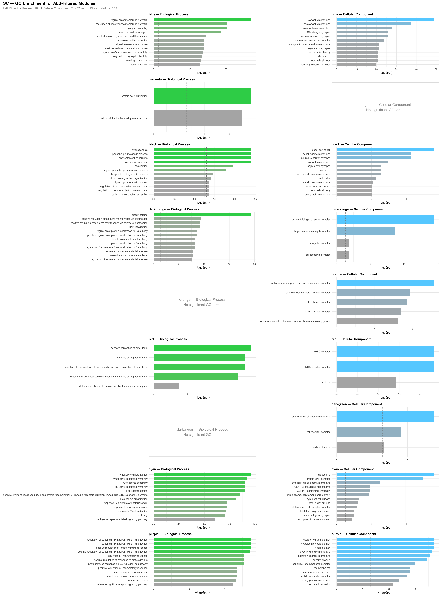
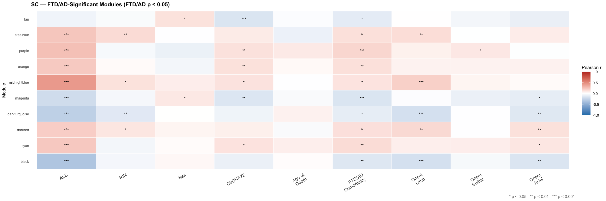

Gene Ontology enrichment for ALS-filtered modules and modules significantly associated with FTD/AD comorbidity in the spinal cord — the primary site of lower motor neuron degeneration.
GO enrichment was run on all genes in each ALS-filtered module (ALS p<0.05, RIN p>0.05) using clusterProfiler with BH multiple testing correction. Only terms with adjusted p<0.05 are shown. Top 12 terms per module are displayed. Gene IDs were mapped from Ensembl to Entrez before enrichment.
SC — ALS Filtered Modules · BP + CC
GO enrichment for 9 ALS-filtered spinal cord modules. The spinal cord produces the richest GO signal: myelin/axonal biology (black module), microglial activation (purple), autophagy (darkgreen), RNA splicing (orange), astrocyte reactivity (cyan).

This heatmap shows all modules with a significant FTD/AD comorbidity association (p<0.05). Unlike the ALS-filtered heatmap, ALS significance is not required here — the filter is purely FTD/AD p<0.05. This reveals which spinal cord gene programmes are specifically altered in ALS patients with FTD/AD comorbidity.
SC — FTD/AD Significant Modules (FTD/AD p < 0.05)
10 spinal cord modules pass FTD/AD p<0.05 — more than any other region. This is the largest FTD/AD module set, reflecting that the spinal cord transcriptome is substantially altered in ALS patients with concurrent FTD/AD comorbidity. Note that several modules show both ALS and FTD/AD significance, suggesting shared neurodegeneration pathways.
